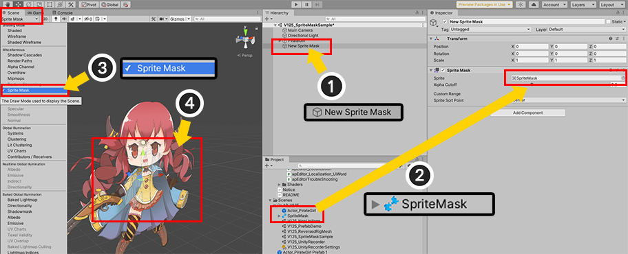
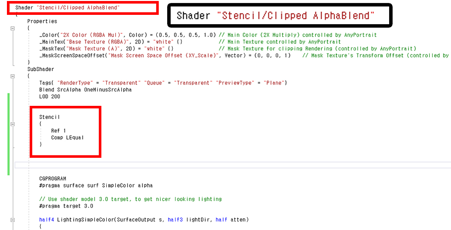
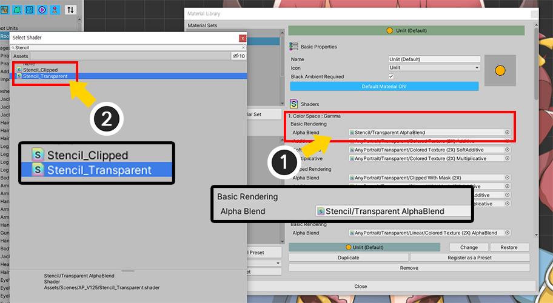
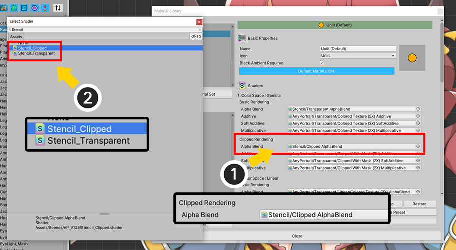
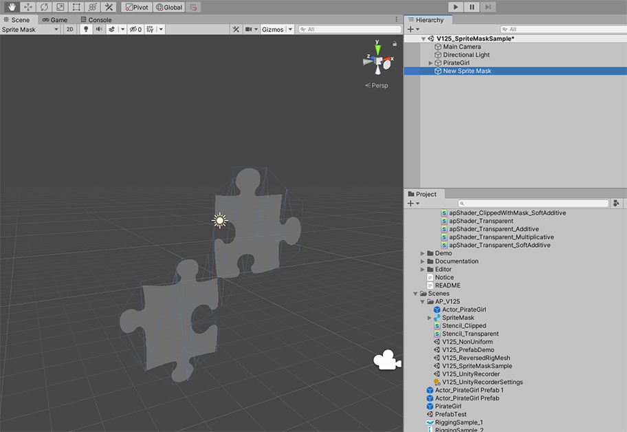
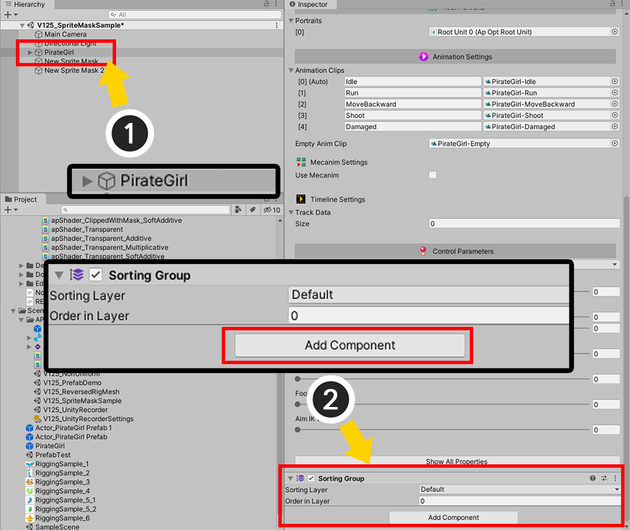

AnyPortrait > 메뉴얼 > Sprite Mask 적용하기
Sprite Mask 적용하기
1.2.5
유니티의 "스프라이트 마스크(Sprite Mask)"를 이용하면 다른 Sprite Renderer의 일부를 숨기면서 렌더링을 할 수 있습니다.
- 스프라이트 마스크 (유니티 공식 메뉴얼)
AnyPortrait에서 제작된 캐릭터들은 Sprite Renderer가 아닌 Mesh Renderer들로 구성되므로 기본적으로는 스프라이트 마스크의 영향을 받지 않습니다.
하지만 간단하게 쉐이더를 작성해서 스프라이트 마스크를 적용할 수 있습니다.
다음의 튜토리얼도 같이 읽어보시는 것을 추천합니다.
- 재질 라이브러리
- 메시의 쉐이더(Shader) 설정
- 커스텀 쉐이더

스프라이트 마스크를 생성해봅시다.
(1) 스프라이트 마스크로 사용할 이미지를 준비하고 Sprite 타입으로 설정합니다.
(2) Hierarchy에서 우클릭을 하고 Sprite Mask를 선택합니다.

(1) 새로운 스프라이트 마스크가 생성되었습니다.
(2) 준비한 이미지를 스프라이트 마스크에 적용합니다.
기본적으로 스프라이트 마스크는 씬 뷰(Scene View)에서 보이지 않습니다.
(3) 씬 뷰에서 보여지는 정보 중에서 Sprite Mask가 포함되도록 만듭니다.
(4) 이제 스프라이트 마스크가 씬 뷰에 나타납니다.

쉐이더를 새로 작성해봅시다.
AnyPortrait의 1개의 재질 세트(Material Set)에는 여러개의 쉐이더들이 포함되지만, 여기서는 가장 많이 사용되는 2개의 쉐이더만 수정해봅시다.
(1개의 재질 세트에서 색상 공간(Color Space) 하나에 포함되는 쉐이더는 총 9개이므로, 제대로 하기 위해서는 9개의 쉐이더 파일을 모두 수정해야 합니다.)
(1) 기본 쉐이더가 위치한 Assets > AnyPortrait > Assets > Shaders 폴더에서 다음의 두개의 쉐이더 에셋을 복제합니다.
- apShader_Transparent : 알파 블렌딩이 되는 기본 쉐이더 (감마 색상 공간)
- apShader_ClippedWithMask : 클리핑 메시에 적용되는 알파 블렌딩이 되는 기본 쉐이더 (감마 색상 공간)

(2) 복제된 쉐이더 에셋들의 이름들을 다음과 같이 바꾸어보았습니다.
- apShader_Transparent > Stencil_Transparent
- apShader_ClippedWithMask > Stencil_Clipped

먼저, Stencil_Transparent 쉐이더 에셋을 열어봅시다.
(커스텀 쉐이더를 작성하는 방법에 대해서는 관련 페이지를 확인해보세요.)
(1) 쉐이더의 이름을 변경합니다. 구분하기 쉬운 이름으로 설정하세요.
(2) Stencil 코드를 추가합니다.
Stencil
{
Ref 1
Comp LEqual
}
스프라이트 마스크는 Stencil을 이용하므로, Sprite Renderer가 아니더라도 마스킹이 가능합니다.

같은 방식으로 Stencil_Clipped 쉐이더 에셋을 수정합니다.
이름을 변경하고 Stencil 코드를 추가해주세요.

작성된 쉐이더 에셋들을 캐릭터에 적용해봅시다.
(1) AnyPortrait 에디터를 열고 Material Library 버튼을 눌러서 재질 라이브러리를 엽니다.
(2) 현재 적용된 재질 세트를 선택하면,
(3) 이 재질 세트에서 사용되는 쉐이더들을 볼 수 있습니다.

수정했던 Stencil 쉐이더 에셋으로 교체해봅시다.
(1) 먼저 Color Space : Gamma > Basic Rendering > Alpha Blend의 쉐이더를
(2) Stencil_Transparent로 교체합니다.

같은 방식으로 클리핑 쉐이더도 교체합니다.
(1) Color Space : Gamma > Clipped Rendering > Alpha Blend의 쉐이더를
(2) Stencil_Clipped로 교체합니다.

재질 라이브러리를 닫고, Bake를 실행합니다.

유니티 씬에서 보면 스프라이트 마스크만 보이고 캐릭터는 보이지 않을 수 있습니다.
게임을 실행해봅시다.

게임을 실행해보니 스프라이트 마스크의 이미지 만큼만 캐릭터가 렌더링되는 것을 볼 수 있습니다.
스프라이트 마스크 영역만 제외하고 렌더링하기
이번에는 반대로 스프라이트 마스크 영역이 숨겨지고, 그 외의 영역만 보여지도록 만들어봅시다.

앞서 작성했던 Stencil_Transparent, Stencil_Clipped 에셋을 하나씩 열고 코드를 수정합니다.
Stencil의 비교 연산자를 Comp LEqual의 반대인 Comp Greater로 변경합니다.

다시 게임을 실행해보면 이전 결과와 반대로, 스프라이트 마스크의 영역을 제외한 나머지가 렌더링이 되는 것을 볼 수 있습니다.
스프라이트 마스크의 Custom Range 사용하기
스프라이트 마스크의 Custom Range라는 속성을 이용하여 지정된 Sorting Layer나 Sorting Order를 가진 대상만 적용을 받도록 만들 수 있습니다.

테스트를 위하여 새로운 스프라이트 마스크를 생성해보았습니다.
두개의 스프라이트 마스크가 동시에 적용된 것을 볼 수 있습니다.

(1) 첫번째 스프라이트 마스크를 선택합니다.
(2) Custom Range를 체크한 뒤, Front의 Order in Layer를 5, Back의 Order in Layer를 0으로 설정합니다.

(3) 두번째 스프라이트 마스크를 선택합니다.
(4) Custom Range를 체크한 뒤, Front의 Order in Layer를 15, Back의 Order in Layer를 10으로 설정합니다.

AnyPortrait로 만든 캐릭터의 Sorting Order를 제어하기 위해서 Sorting Group을 이용해봅시다.
(1) AnyPortrait로 만든 캐릭터나 상위 GameObject를 선택합니다.
(2) Add Component 버튼을 누르고 Sorting Group을 추가합니다.

Sorting Order Option을 Depth To Order로 변경합니다.
이제 Sorting Group을 이용하여 어떤 스프라이트 마스크가 적용될지 설정할 수 있습니다.

Sorting Group의 Order in Layer의 값을 3으로 설정하면 첫번째 마스크에만 영향을 받습니다.

Sorting Group의 Order in Layer의 값을 13으로 설정하면 두번째 마스크에만 영향을 받습니다.
참고
Sorting Group을 사용하지 않고 AnyPortrait의 Sorting Order Option을 Set Order 모드로 설정한 상태에서도 동일하게 이 작업을 수행할 수 있습니다.